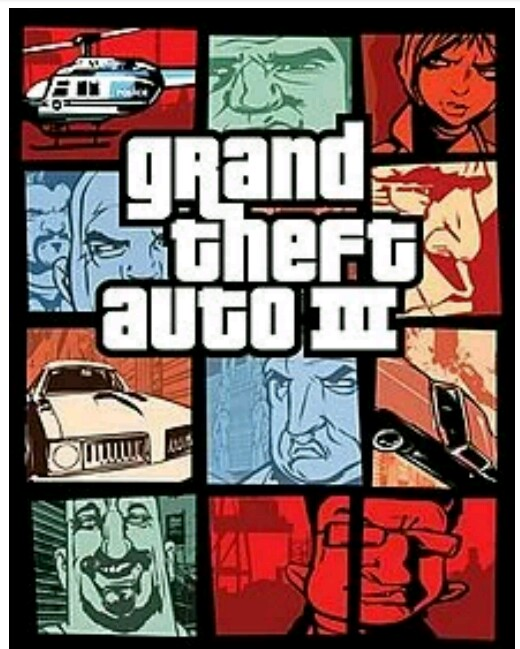
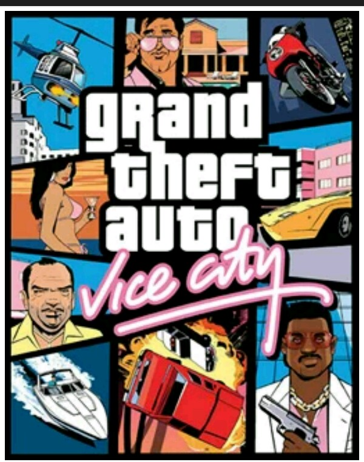
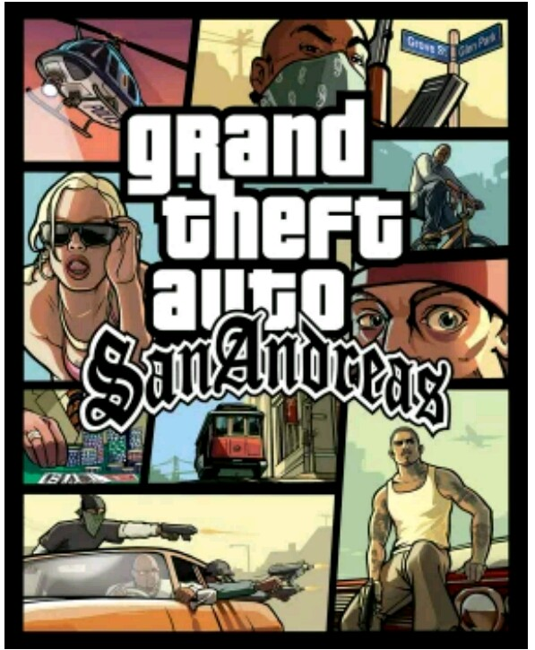
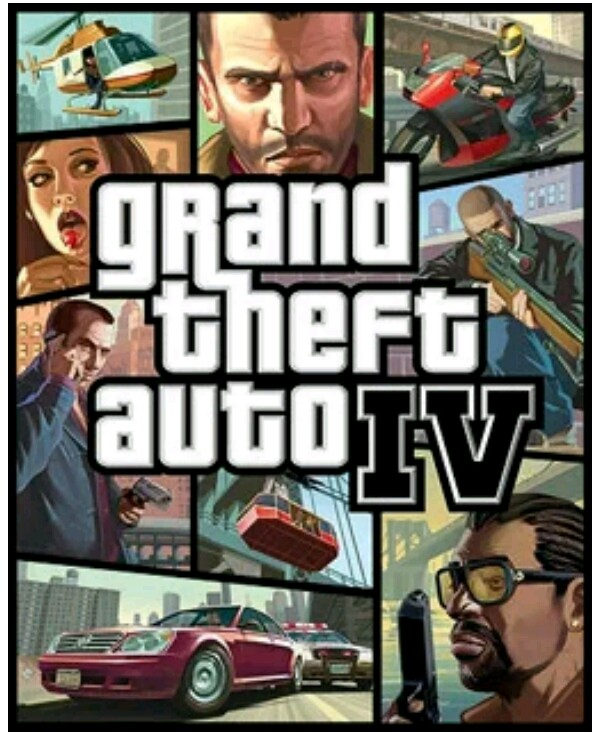

Developed by RockstarNorth, Grand Theft Auto (aka GTA) is an action-adventure videogame series for almost all the platforms.It first came out in October 1997, and its latest release was GTA V in September 2013. Up until 2014,the game had 11 stand-alone games and four expansion packs. GrandTheft AutoIII wasa benchmark entry, to bring the serie to a three-dimensional view. If it is said that GTA opened up a window of opportunities for other open-world action games , it would not be wrong. Common Gameplay The developer set most games of the series in the fictional locales designed on Liberty City, Vice City or San Andreas, which are like NewYork City, Miami and California, respectively. The GTA games download had three fictional cities, whereas the subsequent entries offered a single setting. The main gameplay had an openworld, enabling you to choose missions to advance in the story line and perform side activities, which comprise action-adventure, shooting, driving, role-playing, and stealth elements. The seriesis set around a number of protagonists who were raised in the underworld. However, their motives are different in every game. GTA Games alsore mind you of the earlier beat ‘em up games. Mostantagonists deceived the protagonist or his organization, or characters with influence that hinder the protagonist’s progress. Additional Advanced Features Most games in the seriesenable you to assume the criminal role, an individual who wants to rise through the organized crime. Each game is loaded with multiple missions in the city, which requires you to complete for a further advancement in the storyline. In addition, Free GTA games feature assassinations and other heinous crimes are featured regularly. You can also perform taxi driving, fire fighting, street racing, bus driving. More so, you can also learn to fly helicopters. Inlater titles, you face amore developed storyline, enabling you to shred anun for tunate event, which serves as motivation for you to climb the criminal ladder and reach the kingpin in the end. Other than that, if you’re not on a mission, the series enables you to freely roam around in the open world. The developers were happy to have shipped over 250million copies worldwide, to make GTA games free downloadthe fourth-highest selling videogame franchiseo fall time. However, it is been controversial on its adult nature and violence. All gta games including gta5, 4, Vice City 1, 2,3,SanAndreas, Liberty City Stories and all MODs are here free and full version..
List of GTA games:
Here are some list of popular GTA games:
- GTA: III (2001) 
- GTA: Vice City (2002) 
- GTA: San Andreas (2004) 
- GTA: IV (2008) 
- GTA: V (2013)
.JPG)
Download
Grand Theft Auto (GTA) is available for Consoles, PS, Xbox, PC, iOS and Android. Luckly for you we've got GTA games for PC, iOS and Android.
Select your OS type below to download GTA: